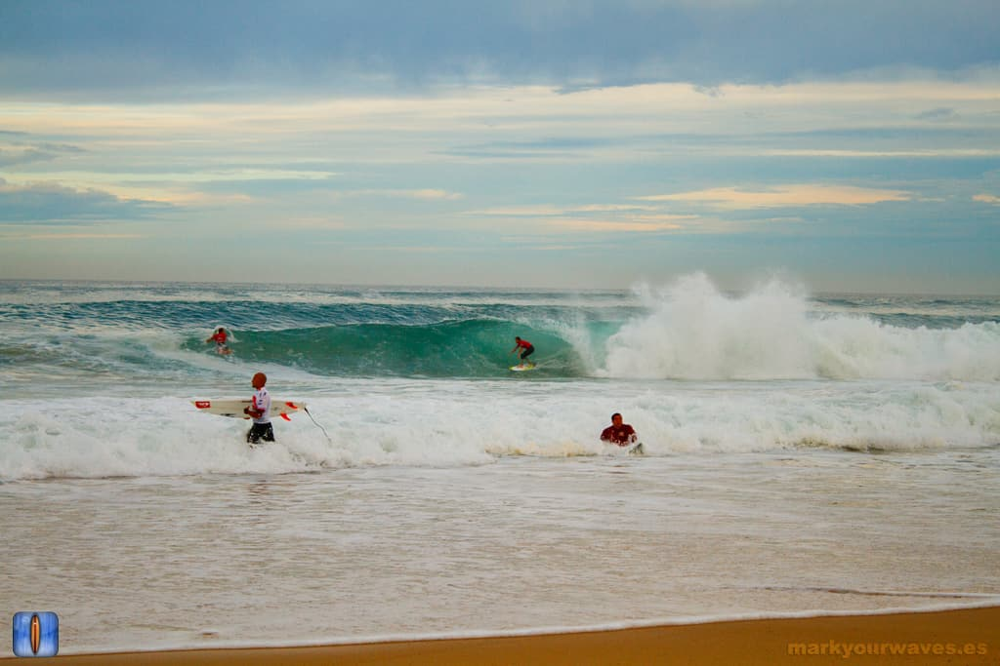

Hossegor — La Gravière
Landes, France · surf

Beach break mythique des Landes, réputé pour ses tubes puissants et rapides. Vague de classe mondiale qui accueille le championnat du monde. Réservée aux surfeurs confirmés.
- Lieu
- Landes, France
- Niveau
- Expert
- Activités
- surf
- Type d'eau
- Mer / océan
- Coordonnées
- 43.66, -1.44 (position approximative du secteur)
Dangers à connaître
- Courants de baïne très forts, surtout à marée descendante.
- Vagues creuses et puissantes qui ferment vite.
- Fonds qui changent vite, attention aux bancs de sable.
Le conseil d'Ocean Buddy
Vérifie bien les baïnes avant d'entrer ! Reste toujours entre les drapeaux et n'y va jamais seul si la houle dépasse 2 m.
Ouvrir dans Ocean Buddy Télécharger sur l'App Store
Source : Description historique Ocean Buddy · vérification externe en attente.